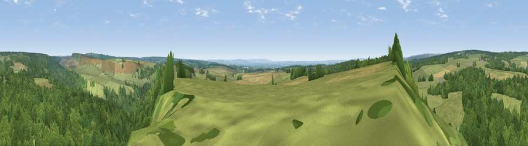

Viewpoint near Newton upon Rawcliffe
#15801 in England · top 35% of its area beats it · near Newton upon RawcliffeWhere it is
The exact computed spot (SE 80375 91275). Click the marker for map links.
The view, rendered

A 360° render of this exact spot computed from the terrain model, tree cover and land cover — summer colours, afternoon light, calibrated against photographs of famous viewpoints. Real trees, hedges and buildings will differ in detail.
The panorama
Grey silhouette: terrain skyline in each direction (720 bearings, Earth curvature and refraction included). Dashed green: skyline with trees (+15 m) and buildings (+8 m) as obstacles. Blue strip: how far the ground is visible on each bearing.
Where the view opens
Wedge length = distance to the farthest visible ground on that bearing (vegetation-aware). Rings at 10, 25 and 50 km.
What fills the view
69% woodland · 26% grassland · 6% cropland
Angular shares of the visible panorama (visual magnitude), not map area. Landscape diversity 0.34 (0–1 Shannon).
Key numbers
More beautiful places nearby
The staircase of upgrades: each row has a higher view potential than everything closer. Driving times are estimates from straight-line distance, calibrated against real road routing — check an actual route before setting out.
| Place | Direction | Drive | Score |
|---|---|---|---|
| Viewpoint near Levisham | NE · 3 km | ~8 min | 59.0 |
| Viewpoint near Levisham | NE · 4 km | ~9 min | 59.8 |
| Viewpoint near Cropton | WSW · 5 km | ~11 min | 61.5 |
| Whinny Nab | ENE · 7 km | ~14 min | 64.9 |
| Ana Cross | WNW · 8 km | ~16 min | 65.9 |
| Peat Hill | NW · 13 km | ~24 min | 72.5 |
| Viewpoint near Gillamoor | W · 14 km | ~26 min | 72.8 |
| Flat Howe | NNE · 15 km | ~26 min | 76.4 |
54.31076, -0.76612 · source: screening · position refined by local search. Computed location — check access rights before visiting.